尺寸 32 × 32 像素。角色、物件占中间 28 × 28，四周留 2px 透明边；地形铺满 32 × 32，不留透明接缝。
视角 角色与有高度的物件统一为相对地面约 75° 的倾斜俯视正交投影，顶面为主，带短立面；地板和贴花保持贴地。
规范 完整要求见 ART_STYLE.md · 美术规范 v2。门含正向/侧向、打开/关闭，按门洞墙体轴线自动选图。
命名 角色 chars/player_s.png、_n、_e；
物件 props/crate_std.png；地形 tiles/wall.png。
处理 原稿命名与成品相同，放进一个目录后跑 node tools/prepare-scene-icons.js <原稿目录>。
1. 侧面只画朝右的。朝左由代码水平翻转。所以侧面图上不要写文字、编号、徽章——翻过来会是错的。单肩包、单侧枪套这类可以放心画。
2. 三张要能一眼分出朝向。靠帽檐位置、背带、背包、传感器这些线索区分，不要只换一下亮度。
3. 地形不要求和邻居无缝。地图是格子化的，每格独立画，格子之间有边界反而像地砖。
4. 不要画投影和地面。阴影由代码按视野亮度叠加，画进去会二次叠加变脏。
角色是三向图：正 _s / 背 _n / 侧 _e。游戏里朝左直接把 _e 水平翻转，所以不需要画 _w。下面每个方向都有独立的复制按钮，prompt 已按方向写好。
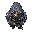
_s
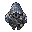
_n
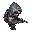
_e
镜像朝左自动生成
chars/player_{s,n,e}.png
3 / 3
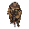
_s
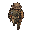
_n
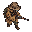
_e
镜像朝左自动生成
chars/scav_{s,n,e}.png
3 / 3
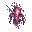
_s
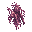
_n
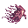
_e
镜像朝左自动生成
chars/echo_{s,n,e}.png
3 / 3
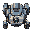
_s
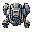
_n
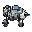
_e
镜像朝左自动生成
chars/guard_{s,n,e}.png
3 / 3
props/crate_fast.png
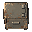
props/crate_std.png
props/crate_heavy.png
props/door.png
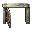
props/door_open.png
props/sdoor.png
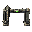
props/sdoor_open.png
props/exit.png
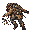
props/corpse_scav.png
props/corpse_echo.png
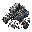
props/corpse_guard.png
props/door_side.png
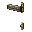
props/door_side_open.png
props/sdoor_side.png
props/sdoor_side_open.png
props/crate_tool.png
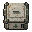
props/crate_med.png
props/crate_elec.png
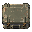
props/crate_supply.png
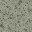
tiles/floor.png
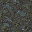
tiles/low.png
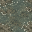
tiles/marsh.png
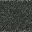
tiles/wall.png
摆设通过 js/data.js 的 DECOR 层装入地图；家具默认实体占一格，只有 ground:true 的血迹等地贴可通行。F1 可查看占格轮廓。
props/desk.png
props/shelf.png
props/barrel.png
props/chair.png
props/blood.png